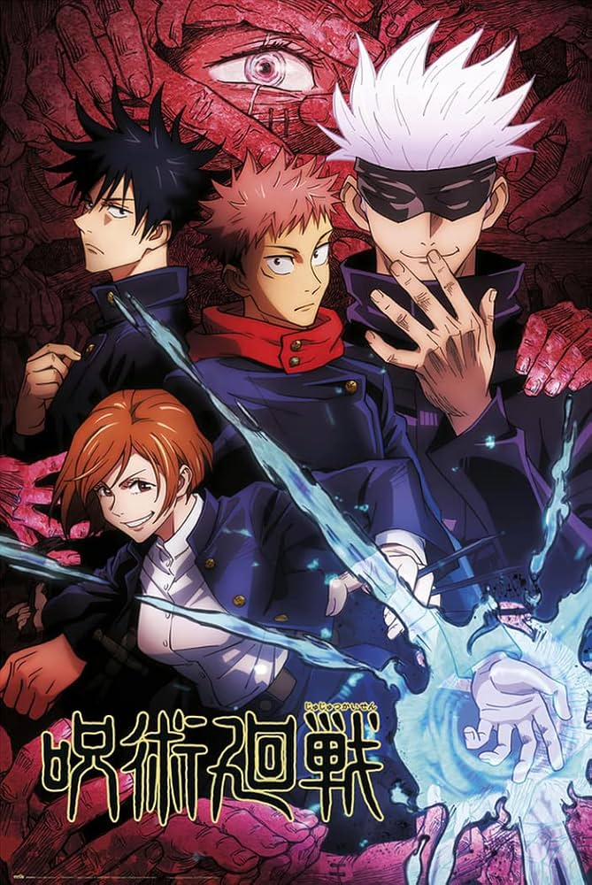
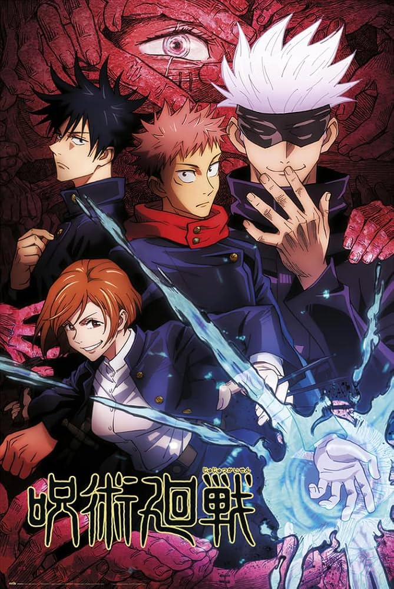
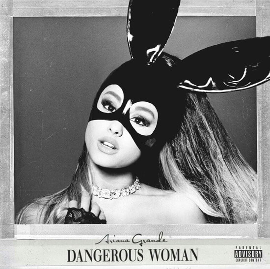

About me

Hi! call me Camico, I'm a 24 year old girl (she/her) born and raised in Chile. This site is in some way a form to express my love for web coding outside of my job in tech.
Well, this is not my first time trying to make a indepent blog, I have a blog back in 2017, unfortunately that time I didn’t have a clever idea of what I wanted my personal blog to be.
Neocities makes me see a lot of people using blogging as a form of expression. This site is full of creativity and self-identity that makes me think the internet may not be so dead. I feel so grateful to know this place. I want to thank you all for making me see we still can have an identity, and I thank you, stranger, for making my space, my identity and my words valuable outside the likes, shares and all that shit on social media (I don't hate social media, I’m just sick of it).


More about me
Likes
- any type of audiovisual media which I can hyperfix to at least 3 months.
- Kpop!
- Insects.
- Color purple, pink, yellow and green.
- Completos! (chilean hotdogs).
Dislikes
- High pitch sounds.
- all type of hate to minorities.
- Avocado (sometimes).
- Think about the things I dislike.
Hobbies
- Journaling.
- Play videogames.
- Watch Series/Movies/Anime.
- Foodie content (restaurant reviewing).
Favorites
Animes/Mangas

 


Albums

Movies/Series


Videogames


Characters
Quiz

What Homestuck Kid Are You?
This page is protected by a
TAPIR

Tapirs have changed very little over the past 20 million years.
Want your own? Visit hekate.neocities.org!